Web Apps Review
- Environment/Setup
- 'Best Practices/Design'
- Open With
- Figure vs. IViewer
- Example Figure
- Example IViewer
- IViewer Details
- Q & A
Environment
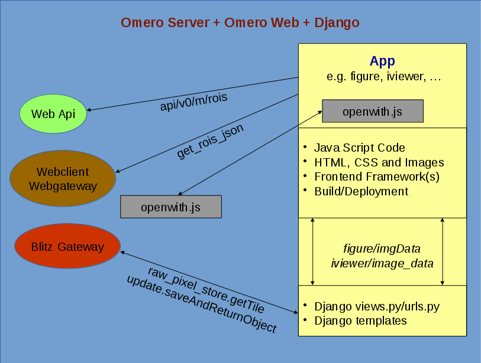'Minimal' Setup – directories
- app/static/app/app.js
- app/templates/app/index.html
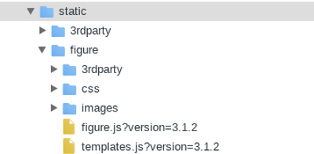
static/app – contents?
- JS
- CSS
- Images
- Fonts
- Third Party Resources
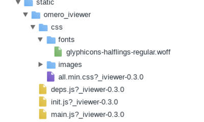
app/templates/app/index.html
<html>
<head>
<link rel="stylesheet" type="text/css"
href=" {% static 'app_directory/css/app.css?version=1.1' %}" />
<script type="text/javascript">
// optionally set parameters for app
window.SOME_APP_PARAM = …;
</script>
<script type="text/javascript"
src="{% static 'app_directory/app.js?version=1.1' %}">
</script>
</head>
…
</html>
static/templates/index.html – iviewer
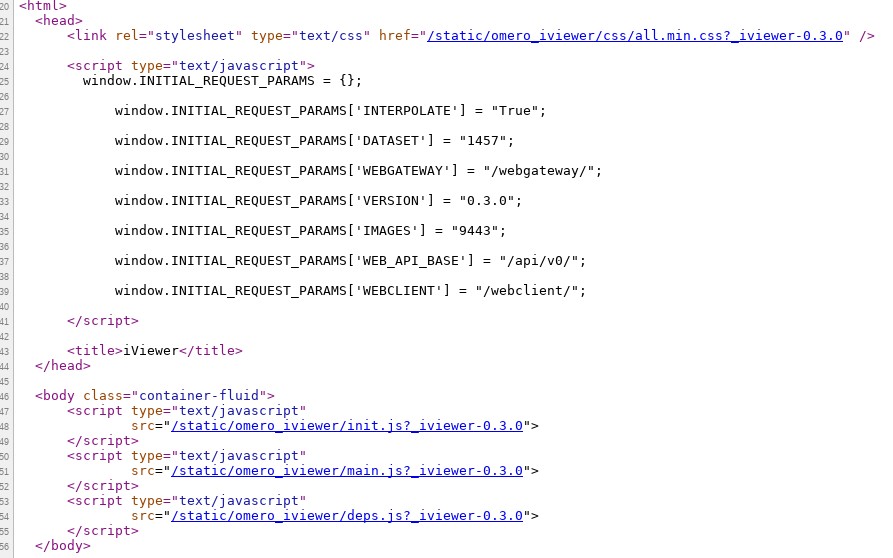
"Best Practices"
- Check in files unaffected by build in their respective target directories, e.g. index.html
- Build the rest and deploy into target dirs
- Optimize for both development and production
- Add suffix to resources to indicate version and avoid caching
- debugging/quicker builds for dev version
- leaner prod version
- fewer requests for immediately needed resources
- hosted libraries, e.g. jquery or bootstrap?
- glyphicons vs. images?
- splitting up of code if framework, loader and setup allows for dynamic (down)loading and execution
Considerations
Omero Web resources (Api, Gateway) vs.
Plugin resources (views.py) vs.
Server-side extentions (Blitz Gateway)
- Code Reuse
- Stability/Breaking Potential across Versions
- Missing Functionality
- Release/Bugfix Cycles
- Cross origin implications (jsonp and cors)
Open With
- script file (openwith.js)
- adding omero config entry
OME.setOpenWithUrlProvider("omero_iviewer", function(selected, url) {
selected_count = selected.length;
initial_id = selected[0].id;
initial_type = selected[0].type;
// we short-circuit for anything that is not an image
if (initial_type !== 'image') {
return url + "?" + initial_type + "=" + initial_id;
}
// add image(s)
url += "?images=";
for (var i=0;i<selected_count;i++) {
if (i !== 0) url += ',';
url += selected[i].id;
}
// add parent for single image
if (selected_count === 1 && $ && $.jstree) {
try {
var inst = $.jstree.reference('#dataTree');
var parent = OME.getTreeImageContainerBestGuess(initial_id);
if (parent && parent.data) {
if (parent.type === 'dataset')
url += '&' + parent.type + '=' + parent.data.id;
}
} catch(err) {
console.log(err);
}
}
return url;
});
$ bin/omero config append omero.web.open_with '["omero_iviewer", "omero_iviewer_index",
{"supported_objects":["images", "dataset", "well"],
"script_url": "omero_iviewer/openwith.js", "label": "OMERO.iviewer"}]'
Apps: Figure, IViewer
| figure | iviewer | |
|---|---|---|
| build | grunt | webpack (also loader) |
| js | jquery, backbone, underscore, rafael | jquery, aurelia, openlayers |
| css | bootstrap | bootstrap |
| git | https://github.com/ome/omero-figure | https://github.com/ome/omero-iviewer |
Figure & IViewer Examples - Pre-requisites
- Setup Omero Server & Web
- Check out respective Project from git
- add plugins (opt: deps) to PYTHONPATH
- install js requirements (see READMEs): npm/node.js
- run build/deploy
e.g. .bashrc (simple export would suffice)
TO_BE_ADDED_TO_PYTHONPATH=("/opt/workspace/omero-marshal" "/opt/workspace/omero-iviewer/plugin" "/opt/workspace/omero-figure")
for p in ${TO_BE_ADDED_TO_PYTHONPATH[@]}
do
COUNT=`echo $PYTHONPATH | grep $p | wc -c`
if [ $COUNT -eq 0 ]; then
export PYTHONPATH=$PYTHONPATH:$p
fi
done
Excursion - build tools & dependencies
{
"version": "0.0.0",
"description": "OMERO.iviewer",
"scripts": {
"dev": "./ol3_viewer_prepare.sh DEV && ant prepare-css && webpack-dev-server --config webpack.dev.config.js --hot --inline --progress --devtool eval",
"debug": "./ol3_viewer_prepare.sh DEV && ./prepare_build.sh DEV && webpack --config webpack.prod.config.js --progress --devtool source-map && ./deploy_build.sh",
"prod": "./ol3_viewer_prepare.sh && ./prepare_build.sh && webpack -p --config webpack.prod.config.js --progress && ./deploy_build.sh",
"docs": "./generate_docs.sh"
},
"dependencies": {
"aurelia-bootstrapper": "2.1.1",
"aurelia-event-aggregator": "1.0.0",
"aurelia-fetch-client": "1.1.2",
"aurelia-framework": "1.1.4",
"aurelia-history-browser": "1.0.0",
"aurelia-loader-webpack": "2.1.0",
"aurelia-logging-console": "1.0.0",
"aurelia-pal-browser": "1.2.1",
"aurelia-polyfills": "1.2.2",
"aurelia-router": "1.3.0",
"aurelia-templating": "1.4.2",
"aurelia-templating-binding": "1.3.0",
"aurelia-templating-resources": "1.4.0",
"aurelia-templating-router": "1.1.0",
"bluebird": "3.5.0",
"bootstrap": "3.3.7",
"jquery": "2.2.4",
"jquery-ui" : "1.12.1",
"spectrum-colorpicker" : "1.8.0",
"d3" : "4.2.7",
"file-saver" : "1.3.3",
"text-encoding" : "0.6.4"
},
"devDependencies": {
"aurelia-tools": "1.0.0",
"aurelia-webpack-plugin": "2.0.0-rc.2",
"babel-core": "6.26.0",
"babel-eslint": "7.2.3",
"babel-loader": "7.1.2",
"babel-plugin-transform-decorators-legacy": "1.3.4",
"babel-plugin-transform-class-properties": "6.24.1",
"babel-preset-env": "1.6.0",
"css-loader": "0.28.4",
"eslint": "2.2.0",
"expose-loader": "0.7.3",
"file-loader": "0.11.2",
"html-loader": "0.4.5",
"style-loader": "0.18.2",
"url-loader": "0.5.9",
"webpack": "3.6.0",
"webpack-dev-server": "2.8.0",
"html-webpack-plugin": "2.29.0"
}
}
Figure Example - adding tab

Figure Setup
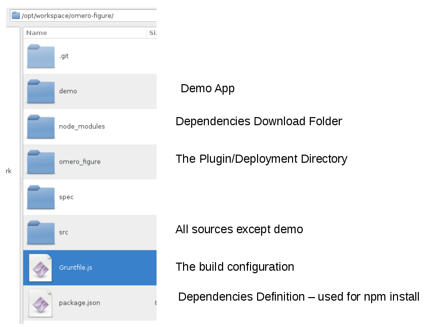Plugin - urls.py, views.py
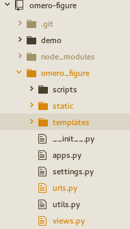
urlpatterns = patterns(
'django.views.generic.simple',
...
url(r'^get_annotations/?$', views.get_annotations,
name='figure_get_annotations'))
@login_required()
def get_annotations(request, conn=None, **kwargs):
# get mandatory param image id
image_id = request.GET.get("image", None)
if image_id is None:
return JsonResponse(
{"error": "The image id is a mandatory parameter"})
# retrieve image object
img = conn.getObject("Image", image_id, opts=conn.SERVICE_OPTS)
if img is None:
return JsonResponse({"error": "Image not Found"}, status=404)
# iterate over annotations and marshal them
annotations = []
for ann in img.listAnnotations():
enc = omero_marshal.get_encoder(ann.OMERO_TYPE)
if enc is None:
enc = omero_marshal.get_encoder(omero.model.Annotation)
ann = enc.encode(ann)
if ann is not None:
annotations.append(ann)
return JsonResponse({"annotations": annotations})
Model - annotations_model.js
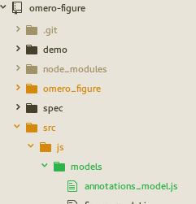
var AnnotationsModel = Backbone.Model.extend({
parse: function(annotation) {
var type = annotation['@type'];
annotation.type = type.substring(type.lastIndexOf('#')+1);
return annotation;
}
});
var AnnotationsList = Backbone.Collection.extend({
model: AnnotationsModel,
parse: function (response) {
if (typeof response === 'object' && response !== null &&
Array.isArray(response.annotations)) {
for (var a in response.annotations) {
this.push(
new AnnotationsModel(
response.annotations[a], {parse: true}));
}
}
return this.models;
}
});
View - right_panel_view.js
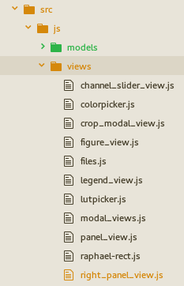
// The 'Right Panel' is the floating Info, Preview etc display.
// It listens to selection changes on the FigureModel and updates its display
// By creating new Sub-Views
var RightPanelView = Backbone.View.extend({
initialize: function(opts) {
// we render on selection changes in the model
this.listenTo(this.model, 'change:selection', this.render);
// this.render();
new LabelsPanelView({model: this.model});
new SliderButtonsView({model: this.model});
new RoisFormView({model: this.model});
new AnnotationsView({model: this.model});
},
...
// AnnotationsView
var AnnotationsView = Backbone.View.extend({
model: FigureModel,
cache: {},
el: $("#annotationsTab"),
template: JST["src/templates/annotations_template.html"],
initialize: function(opt) {
this.render = _.debounce(this.render);
this.models = opt.models;
this.listenTo(this.model, 'change:selection', this.render);
this.render();
},
render: function() {
var selected = this.model.getSelected();
var message = null;
var ann = new AnnotationsList();
if (selected && selected.length > 0) {
if (selected.length === 1) {
var imgId = selected.at(0).get('imageId');
if (this.cache[imgId] instanceof AnnotationsList)
ann = this.cache[imgId];
else {
ann.fetch({
url: BASE_WEBFIGURE_URL +
'get_annotations/?image=' + imgId,
success: function(data) {
this.cache[imgId] = data;
this.renderTemplate(null, this.cache[imgId]);
}.bind(this),
error: function(err) {
this.renderTemplate(
"Error requesting annotations", ann);
}.bind(this)
});
return;
}
} else message = "We don't do multi selection";
} else message = "No Image Selected";
this.renderTemplate(message, ann);
return this;
},
renderTemplate: function(message, annotations) {
if (typeof message !== 'string') message = null;
var html = this.template({
"message": message,
"annotations": annotations
});
this.$el.html(html);
}
});
Templates - index.html, annotations_template.html
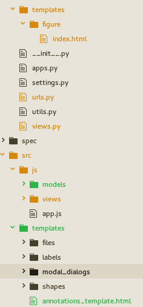
<div class="modal-dialog non-modal-dialog draggable-dialog">
<div class="modal-content">
<ul class="nav nav-tabs" id="previewInfoTabs">
<li><a href="#infoTab">Info</a></li>
<li class="active"><a href="#previewTab">Preview</a></li>
<li><a href="#labelsTab">Labels</a></li>
<li><a href="#annotationsTab">Annotations</a></li>
</ul>
<div class="tab-content">
<div class="tab-pane" id="infoTab"></div>
...
<div class="tab-pane" id="annotationsTab"></div>
<div>
<% if (message !== null) { %>
<div class="center"><%= message %></div>
<% } else if (annotations.length === 0) { %>
<div class="center">No Annotations Found</div>
<% } else { %>
<ul>
<% annotations.forEach(function(a) { %>
<%= a.get('type') %>
<ul>
<% if (a.get('Value')) { %>
<li>Value: <%= a.get('Value') %></li>
<% } %>
<% if (a.get('Description')) { %>
<li>Desc: <%= a.get('Description') %></li>
<% } %>
<% if (a.get('Namespace')) { %>
<li>NS: <%= a.get('Namespace') %></li>
<% } %>
</ul>
<% }) %>
</ul>
<% } %>
</div>
Build & Debugging
https://github.com/ome/omero-figure/blob/master/README.rst
[harald@harald omero-figure]$ npm install
...
[harald@harald omero-figure]$ grunt concat
Running "concat:js" (concat) task
File omero_figure/static/figure/figure.js created.
Done, without errors.
[harald@harald omero-figure]$ grunt jst
Running "jst:compile" (jst) task
File omero_figure/static/figure/templates.js created.
Done, without errors.
[harald@harald omero-figure]$ grunt watch
Running "watch" task
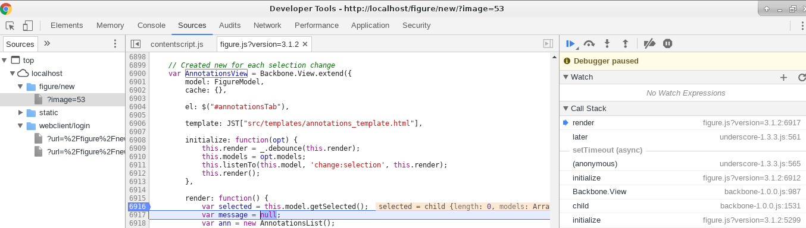
IViewer Example - adding tab
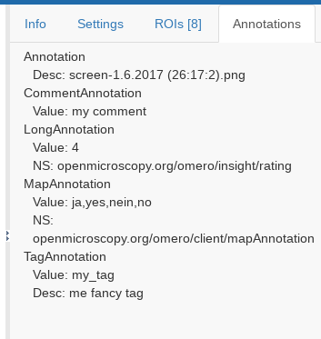
- https://github.com/ome/omero-iviewer/pull/131
- plugin code (optional)
- data object (optional)
- template and view logic
- css tweaking
IViewer Setup
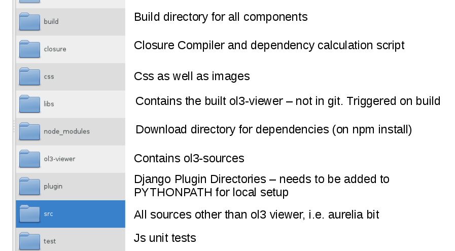Plugin - urls.py, views.py
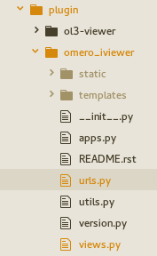
urlpatterns = patterns(
'django.views.generic.simple',
...
url(r'^get_annotations/?$', views.get_annotations,
name='omero_iviewer_get_annotations'))
@login_required()
def get_annotations(request, conn=None, **kwargs):
# get mandatory param image id
image_id = request.GET.get("image", None)
if image_id is None:
return JsonResponse(
{"error": "The image id is a mandatory parameter"})
# retrieve image object
img = conn.getObject("Image", image_id, opts=conn.SERVICE_OPTS)
if img is None:
return JsonResponse({"error": "Image not Found"}, status=404)
# iterate over annotations and marshal them
annotations = []
for ann in img.listAnnotations():
enc = omero_marshal.get_encoder(ann.OMERO_TYPE)
if enc is None:
enc = omero_marshal.get_encoder(omero.model.Annotation)
ann = enc.encode(ann)
if ann is not None:
annotations.append(ann)
return JsonResponse({"annotations": annotations})
Model - image_annotations.js
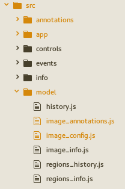
import {noView} from 'aurelia-framework';
import Misc from '../utils/misc';
import {IVIEWER, TABS} from '../utils/constants';
/**
* Contains the annotations linked to an image
*/
@noView
export default class ImageAnnotations {
/**
* the app context
* @memberof ImageAnnotations
* @type {Context}
*/
context = null;
/**
* the image id
* @memberof ImageAnnotations
* @type {number}
*/
image_id = null;
/**
* a flag that signals whether we have successfully
* executed the annotations request
* @memberof ImageAnnotations
* @type {boolean}
*/
ready = false;
/**
* the image id
* @memberof ImageAnnotations
* @type {number}
*/
annotations = [];
/**
* @constructor
* @param {Context} context the application context
* @param {number} image_id the image id to be queried
*/
constructor(context, image_id) {
this.context = context;
this.image_id = image_id;
if (this.context.selected_tab === TABS.ANNOTATIONS)
this.requestData(true);
}
/**
* Requests the annotations for the image
* @param {boolean} force if true we force a request even though we have
* done so before
* @memberof ImageAnnotations
*/
requestData(force = false) {
if (this.ready && !force) return;
this.annotations.splice(0, this.annotations.length);
$.ajax({
url :
this.context.server + this.context.getPrefixedURI(IVIEWER) +
"/get_annotations/?image=" + this.image_id,
success : (response) => {
if (typeof response === 'object' &&
Misc.isArray(response.annotations)) {
// extract type without schema prefix
for (let a in response.annotations) {
let ann = response.annotations[a];
let type = ann['@type'];
ann['type'] = type.substring(type.lastIndexOf("#")+1);
delete ann['@type'];
this.annotations.push(ann);
}
}
this.ready = true;
},
error : (error) => {
this.ready = true;
console.error(error);
}
});
}
}
View - annotations.js
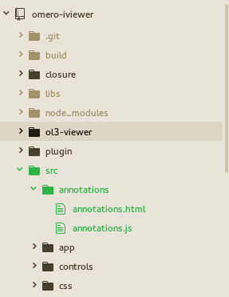
import Context from '../app/context';
import {inject, customElement, bindable, BindingEngine} from 'aurelia-framework';
@customElement('annotations')
@inject(Context, BindingEngine)
export class Annotations {
/**
* a reference to the image annotations (bound in template)
* @memberof Annotations
* @type {ImageAnnotations}
*/
@bindable image_annotations = null;
/**
* listens to image annotations changes
* @memberof Annotations
* @type {Object}
*/
image_annotations_changes = null;
/**
* @constructor
* @param {Context} context the application context (injected)
* @param {BindingEngine} bindingEngine the BindingEngine (injected)
*/
constructor(context, bindingEngine) {
this.context = context;
this.bindingEngine = bindingEngine;
}
/**
* Overridden aurelia lifecycle method:
* called whenever the view is bound within aurelia
* in other words an 'init' hook that happens before 'attached'
*
* @memberof Annotations
*/
bind() {
if (this.image_annotations === null) return;
// listen for image annotation changes
this.image_annotations_changes =
this.bindingEngine.collectionObserver(
this.image_annotations.annotations).subscribe(
(newValue, oldValue) => {
// show how observer works by listening to annotations changes
console.info(newValue);
});
}
/**
* Overridden aurelia lifecycle method:
* called whenever the view is unbound within aurelia
* in other words a 'destruction' hook that happens after 'detached'
*
* @memberof Annotations
*/
unbind() {
// get rid of observers
if (this.image_annotations_changes) {
this.image_annotations_changes.dispose();
}
}
}
Templates - annotations.html, right-hand-panel.html
<template>
<ul show.bind="image_annotations.ready">
<li repeat.for="ann of image_annotations.annotations">
${ann.type}
<ul>
<li if.bind="ann.Value">Value: ${ann.Value}</li>
<li if.bind="ann.Description">Desc: ${ann.Description}</li>
<li if.bind="ann.Namespace">NS: ${ann.Namespace}</li>
<ul>
</li>
</ul>
<div class="disabled-color loading-text"
show.bind="!image_annotations.ready">
Loading Annotations ...
</div>
</template>
<template>
<require from="../settings/settings"></require>
<require from="../regions/regions"></require>
<require from="../info/info"></require>
<require from="../annotations/annotations"></require>
...
<div class="tab-content regions-tabs"
show.bind="image_config && image_config.image_info &&
!image_config.image_info.error">
<div id="${TABS.INFO}" role="tabpanel"
class="tab-pane ${context.selected_tab === TABS.INFO ? 'active' : ''}">
<info image_info.bind="image_config.image_info"></info>
</div>
<div id="${TABS.SETTINGS}" role="tabpanel"
class="tab-pane ${context.selected_tab === TABS.SETTINGS ? 'active' : ''}">
<settings image_config.bind="image_config"></settings>
</div>
<div id="${TABS.ROIS}" role="tabpanel"
class="tab-pane ${context.selected_tab === TABS.ROIS ? 'active' : ''}">
<regions regions_info.bind="image_config.regions_info"></regions>
</div>
<div id="${TABS.ANNOTATIONS}" role="tabpanel"
class="tab-pane ${context.selected_tab === TABS.ANNOTATIONS ? 'active' : ''}">
<annotations
image_annotations.bind="image_config.image_annotations">
</annotations>
</div>
</div>
</template>
app.css
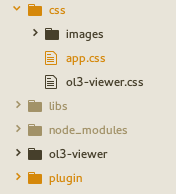
...
#panel-tabs li a {
padding-left: 15px;
padding-right: 15px;
}
...
annotations ul {
padding-left: 10px;
list-style-type: none;
}
Building
https://github.com/ome/omero-iviewer/blob/master/README.rst- debug - npm run debug
- prod - npm run prod
[harald@harald omero-iviewer]$ npm run debug
> @0.0.0 debug /opt/workspace/omero-iviewer
> ./ol3_viewer_prepare.sh DEV && ./prepare_build.sh DEV && webpack --config webpack.prod.config.js --progress --devtool source-map && ./deploy_build.sh
omitting ol3-viewer build
Preparing build. You are going to need npm at a minimum
Fetching dependencies needed for build...
npm WARN optional SKIPPING OPTIONAL DEPENDENCY: fsevents@^1.0.0 (node_modules/chokidar/node_modules/fsevents):
npm WARN notsup SKIPPING OPTIONAL DEPENDENCY: Unsupported platform for fsevents@1.1.2: wanted {"os":"darwin","arch":"any"} (current: {"os":"linux","arch":"x64"})
npm WARN @0.0.0 No repository field.
npm WARN @0.0.0 No license field.
Erasing build/deploy directories...
Recreating build/deploy directories...
Buildfile: /opt/workspace/omero-iviewer/build.xml
clean-css-dir:
[mkdir] Created dir: /opt/workspace/omero-iviewer/build/css
copy-images:
[copy] Copying 26 files to /opt/workspace/omero-iviewer/build/css/images
prepare-css-debug:
[echo] Combine css...
BUILD SUCCESSFUL
Total time: 1 second
Hash: a559a0efee63d796b1e2
Version: webpack 3.6.0
Time: 56964ms
Asset Size Chunks Chunk Names
main.js 2.29 MB 0 [emitted] [big] main
css/images/collapse-left.png 1.04 kB [emitted]
css/fonts/glyphicons-halflings-regular.woff 23.4 kB [emitted]
css/images/ui-icons_777777_256x240.png 3.76 kB [emitted]
css/images/ui-icons_555555_256x240.png 3.76 kB [emitted]
css/images/ui-icons_ffffff_256x240.png 3.76 kB [emitted]
css/images/collapse-right.png 1.03 kB [emitted]
deps.js 1.09 MB 1 [emitted] [big] deps
init.js 5.81 kB 2 [emitted] manifest
main.js.map 3.4 MB 0 [emitted] main
deps.js.map 1.21 MB 1 [emitted] deps
init.js.map 5.89 kB 2 [emitted] manifest
[1] ./src/utils/misc.js 14.6 kB {0} [built]
[2] ./src/utils/constants.js 5.48 kB {0} [built]
[4] ./src/app/context.js 26.9 kB {0} [built]
[5] ./src/events/events.js 5.45 kB {0} [built]
[11] ./src/utils/ui.js 15.5 kB {0} [built]
[13] (webpack)/buildin/global.js 509 bytes {0} [built]
[44] multi aurelia-polyfills aurelia-loader-webpack ./src/main 52 bytes {0} [built]
[app/index] ./src/app/index.js 3.32 kB {0} [built]
[app/index.html] ./src/app/index.html 3.46 kB {0} [built]
[48] (webpack)/buildin/harmony-module.js 596 bytes {0} [built]
[49] ./src/main.js 2.17 kB {0} [built]
[55] ./src/model/image_config.js 4.83 kB {0} [built]
[62] (webpack)/buildin/amd-define.js 88 bytes {1} [built]
[63] (webpack)/buildin/amd-options.js 82 bytes {1} [built]
[95] multi d3 file-saver text-encoding 52 bytes {1} [built]
+ 135 hidden modules
Deploying built resources to plugin directory...
Building - Gotchas
- Debug Target builds Openlayers Viewer only if not built before
- If you like to rebuild the ol viewer in 'debug', run: ant
- Dependencies have changed. Run: rm -rf node_modules
Coding - Gotchas
- Beware async nature: data readiness in view (null/type checks)
- Beware lifecycle nature: bind, unbind, attached, detached
- Use destruction methods: unbind/detached (observer disposal, jquery widget destroy)
- Favor plain html and binding over library widgets and updating (if possible)
Openlayers Viewer within IViewer
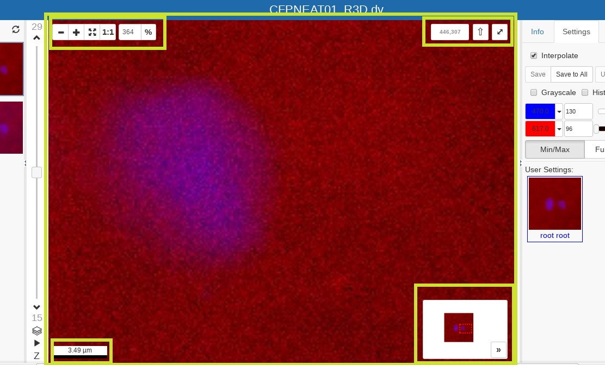- Image Requesting & Rendering
- Image Interaction (Zoom, Pan, Rotate)
- Controls - Zoom, Birdseye, Scalebar, ...
- Regions Of Interest
Openlayers - Extending Functionality
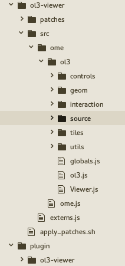
Ol3 uses:
Google Closure Tools
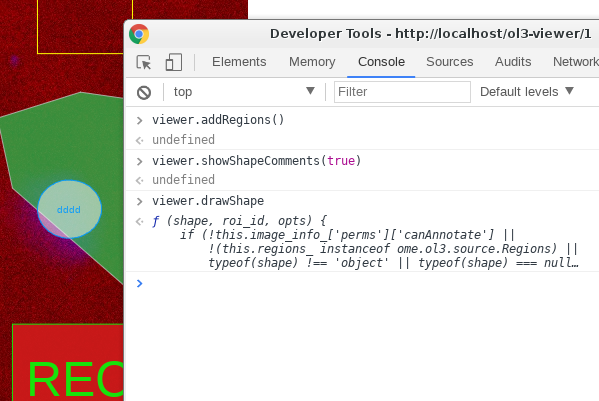
goog.provide('ome.ol3.geom.Ellipse');
goog.require('ol.geom.Polygon');
/**
* @classdesc
* Ellipse is an extension of the built-in ol.geom.Polygon that will allow
* you to create ellipses within the open layers framework.
*
* At present the approach taken is aiming at best integration into openlayers
* as well as cross browser support. For HTMLCanvas there is a drawEllipse
* method which, toDate, is only supported by Chrome.
*
* That said, there are various methods out there how people accomplish the task
* of drawing an ellipse on an HTMLCanvas. They range from scaled circles, over
* sets of bezier curves to what is, undoubtedly, the most accurate method
* mathematically, namely to trace the outline for a given step size according to
* the following formulae for x,y:
* <pre>x = a * cos(theta)</pre> and
* <pre>y = b * sin(theta)</pre>
* see: {@link https://en.wikipedia.org/wiki/Ellipse}
*
* The latter technique is used here since it's accurate enough and produces
* a polygon of connected points which openlayers likes.
*
*
* @constructor
* @extends {ol.geom.Polygon}
*
* @param {number} cx the center x coordinate of the ellipse
* @param {number} cy the center y coordinate of the ellipse
* @param {number} rx the radius x distance of the ellipse
* @param {number} ry the radius y distance of the ellipse
* @param {Object=} transform an AffineTransform object according to omero marshal
*/
ome.ol3.geom.Ellipse = function(cx, cy, rx, ry, transform) {
// preliminary checks: are all mandatory paramters numeric
if (typeof cx !== 'number' || typeof cy !== 'number' ||
typeof rx !== 'number' || typeof ry !== 'number')
console.error("at least one ellipse param is not numeric!");
/**
* center x coordinate
* @type {number}
* @private
*/
this.cx_ = cx;
/**
* center y coordinate
* @type {number}
* @private
*/
this.cy_ = cy;
/**
* radius x distance
* @type {number}
* @private
*/
this.rx_ = rx;
/**
* radius y distance
* @type {number}
* @private
*/
this.ry_ = ry;
/**
* the transformation matrix of length 6
* @type {Array.<number>|null}
* @private
*/
this.transform_ =
ome.ol3.utils.Transform.convertAffineTransformIntoMatrix(transform);
/**
* the step size for plotting
* @type {number}
* @private
*/
this.step_ = 0.1;
// call super and hand in our coordinate array
goog.base(this, [this.getPolygonCoords()]);
}
goog.inherits(ome.ol3.geom.Ellipse, ol.geom.Polygon);
/**
* Traces out the ellipse and returns the coords
* @return {Array.<number>} the coordinate array for the outline
*/
ome.ol3.geom.Ellipse.prototype.getPolygonCoords = function() {
// trace ellipse now and store coordinates
var coords = [];
for (var i = 0 * Math.PI, ii=2*Math.PI; i < ii; i += this.step_) {
var x = this.cx_ + this.rx_ * Math.cos(i);
var y = this.cy_ + this.ry_ * Math.sin(i);
coords.push(
ome.ol3.utils.Transform.applyTransform(this.transform_, [x, y]));
}
if (coords.length > 0) coords.push(coords[0]); // close polygon
return coords;
}
/**
* Gets the transformation associated with the ellipse
* @return {Object|null} the AffineTransform object (omero marshal) or null
*/
ome.ol3.geom.Ellipse.prototype.getTransform = function() {
return ome.ol3.utils.Transform.convertMatrixToAffineTransform(
this.transform_);
}
/**
* Gets the center of the ellipse in array form [cx,cy]
* @return {Array.<number>} the center of the ellipse as an array
*/
ome.ol3.geom.Ellipse.prototype.getCenter = function() {
return [this.cx_,this.cy_] ;
}
/**
* Sets the center of the ellipse using a coordinate array [cx, cy]
*
* @param {Array.<number>} value the center of the ellipse as an array
*/
ome.ol3.geom.Ellipse.prototype.setCenter = function(value) {
if (!ome.ol3.utils.Misc.isArray(value) ||
typeof value[0] !== 'number' || typeof value[1] !== 'number')
console.error(
"the center needs to be given as a numeric array [cx,cy]");
this.cx_ = value[0];
this.cy_ = value[1];
}
/**
* Gets the radius (distance x, distance y) of the ellipse in array form [rx,ry]
* @return {Array.<number>} the radius of the ellipse as an array
*/
ome.ol3.geom.Ellipse.prototype.getRadius = function() {
return [this.rx_, this.ry_];
}
/**
* Sets the radius (distance x, distance y) of the ellipse in array form [rx,ry]
*
* @param {Array.<number>} value the radius of the ellipse as an array
*/
ome.ol3.geom.Ellipse.prototype.setRadius = function(value) {
if (!ome.ol3.utils.Misc.isArray(value) ||
typeof value[0] !== 'number' || typeof value[1] !== 'number')
console.error("the radius needs to be given as a numeric array [cx,cy]");
this.rx_ = value[0];
this.ry_ = value[1];
}
/**
* First translate then store the newly translated coords
*
* @private
*/
ome.ol3.geom.Ellipse.prototype.translate = function(deltaX, deltaY) {
// delegate
if (this.transform_) {
this.transform_[4] += deltaX;
this.transform_[5] -= deltaY;
this.setCoordinates([this.getPolygonCoords()]);
} else {
ol.geom.SimpleGeometry.prototype.translate.call(this, deltaX, deltaY);
this.setCenter([this.cx_ + deltaX, this.cy_ + deltaY]);
}
};
/**
* First scale then store the newly scaled coords
*
* @private
*/
ome.ol3.geom.Ellipse.prototype.scale = function(factor) {
// delegate
if (this.transform_) {
this.transform_[0] *= factor;
this.transform_[1] *= factor;
this.transform_[2] *= factor;
this.transform_[3] *= factor;
this.setCoordinates([this.getPolygonCoords()]);
} else {
ol.geom.SimpleGeometry.prototype.scale.call(this, factor);
var radius = this.getRadius();
this.setRadius([radius[0] * factor, radius[1] * factor])
}
};
/**
* Make a complete copy of the geometry.
* @return {ome.ol3.geom.Ellipse} Clone.
*/
ome.ol3.geom.Ellipse.prototype.clone = function() {
return new ome.ol3.geom.Ellipse(
this.cx_, this.cy_, this.rx_, this.ry_, this.getTransform());
};
Debugging ol3 viewer
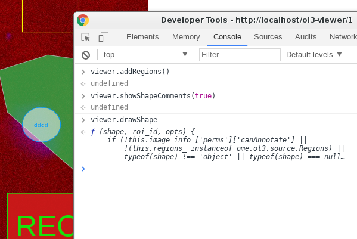
- only debug: ant build-debug plugin
- debug/prod: ant build-plugin
- browse to: http://localhost/ol3-viewer/1
- open browser's dev tools (F12)
- use viewer instance (see screen)
Rules
- Functions have to be exported to be accessible once compiled
...
goog.exportProperty(
ome.ol3.Viewer.prototype,
'doVeryUsefulAnimation',
ome.ol3.Viewer.prototype.doVeryUsefulAnimation);
- Use deep copies for parameters/data when calling from iviewer
- Only Exception: eventbus
...
this.viewer.someExposedFunction(Object.assign({}, someDataObject));
How to use the ol3 viewer in IViewer?
src/viewers/ol3-viewer.js
import {ol3} from '../../libs/ol3-viewer.js';
...
/**
* Instantiates a new ol3 viewer once image data is ready
*
* @memberof Ol3Viewer
*/
initViewer() {
// tweak initParams for ol3viewer to reflect iviewer app name
let ol3initParams = Object.assign({}, this.context.initParams);
ol3initParams[PLUGIN_PREFIX] = this.context.getPrefixedURI(IVIEWER);
// create viewer instance
this.viewer =
new ol3.Viewer(
this.image_config.image_info.image_id, {
eventbus : this.context.eventbus,
server : this.context.server,
data: this.image_config.image_info.tmp_data,
initParams : ol3initParams,
container: this.container
});
delete this.image_config.image_info.tmp_data;
// only the first request should be affected
this.context.resetInitParams();
// use existing interpolation setting
this.viewer.enableSmoothing(this.context.interpolate);
this.resizeViewer({window_resize: true, delay: 100});
this.viewer.doVeryUsefulAnimation(1000)
}
Development Workflow
- local development, deployment and testing
- Opening PR against project
- CI merge (periodic/on-demand runs):
https://ci.openmicroscopy.org/view/Web/job/iviewer-merge https://ci.openmicroscopy.org/view/Web/job/FIGURE-merge/ - CI web dev merge deploy (periodic/on-demand runs):
https://ci.openmicroscopy.org/view/Web/job/WEB-DEV-merge-deploy/ - if above steps finish successfully changes can be seen/tested: http://web-dev-merge.openmicroscopy.org/
CI Configuration Changes
- ask Jean-Marie who gave me these instructions ;-)
- https://github.com/openmicroscopy/management_tools
- make changes to respective sections:
ci/config/WEB-DEV-merge-deploy/webapps.omero
ci/config/WEB-DEV-latest-deploy/webapps.omero - Open PR -> once PR is merged -> run ...
- https://ci.openmicroscopy.org/view/Mgmt/job/MANAGEMENT_TOOLS-latest-deploy/
PyPi Download/Deployment
- Releases: https://pypi.python.org/pypi
- Follow Guide: Make your App installable
- setup.py (iviewer)
- setup.cfg (iviewer)
- MANIFEST.in (iviewer)